السلسلة 5
الشاحنة (صنف C) · 20 سؤال. كل سؤال فيه الصورة والصوت. اختار الجواب (ولا جوج إلا كانو صحاح)، ورك على «تأكيد» باش تشوف واش صبتي.
- 20سؤال
- 16باش تنجح
- 1 – 4جواب واحد ولا أكثر
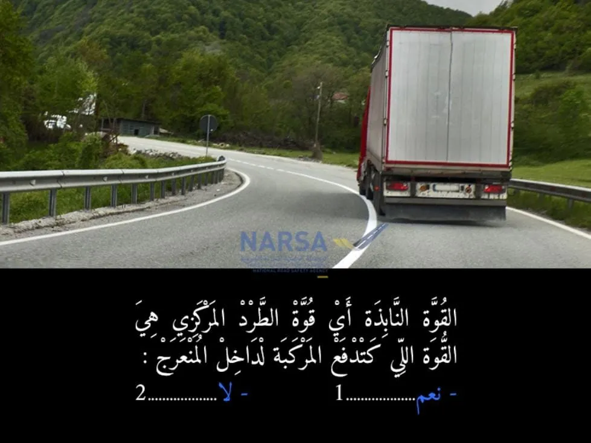
الكلافيي: 1–4 للجواب، Enter للتأكيد وللسؤال الجاي.
السلسلة 5 · النتيجة ديالك
0 / 20
السلسلة 5
الشاحنة (صنف C) · 20 سؤال، بالصوت، مع الجواب الصحيح والشرح.
السؤال 1
بيّن الجواب
الجواب الصحيح: 2
- القوة النابذة (أو قوة الطرد المركزي) هي القوة اللي كتدفع العربة لخارج المنعرج، ماشي لداخل. هي اللي كتحاول تخرج العربة من المسار الدائري.
السؤال 2
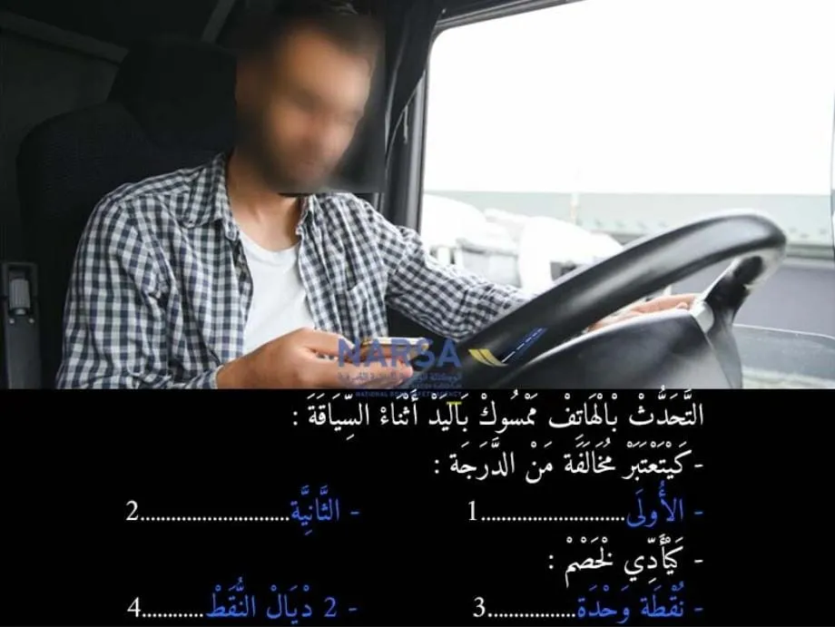
بيّن الجواب
الجواب الصحيح: 2 و 3
- حسب مدونة السير على الطرق في المغرب، التحدث بالهاتف ممسوك باليد أثناء السياقة يعتبر مخالفة خطيرة، وهي من الدرجة الثانية.
- إضافة إلى الغرامة المالية، هاد المخالفة كتأدي لخصم نقط من رخصة السياقة. المخالفات من الدرجة الثانية كيتم خصم نقطتين من رخصة السياقة عليها.السؤال 3
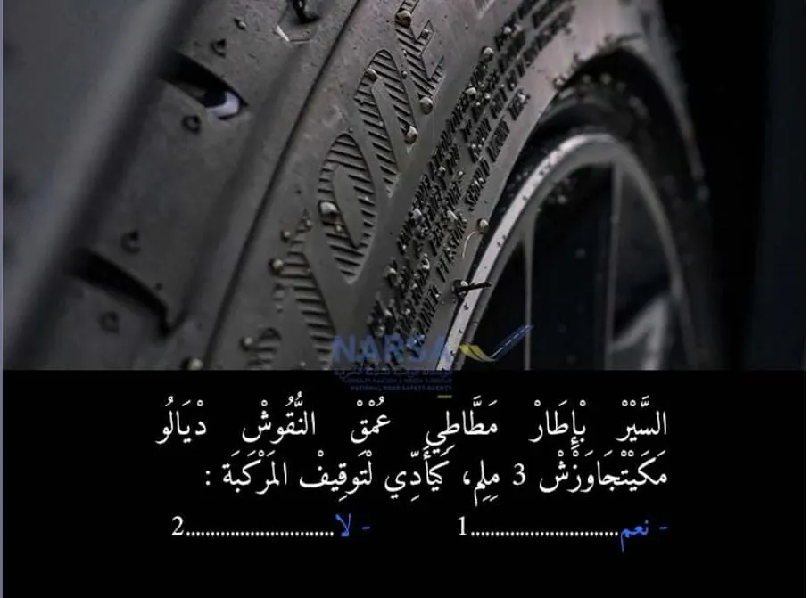
بيّن الجواب
الجواب الصحيح: 1
السير بإطار فيه النقوش أقل من او يساوي 3 ملم كيشكل مخالفة تقنية، وكيمكن تؤدي إلى توقيف المركبة حتى تبدل العجلات وتولي صالحة للسير.
يجب أن يتجاوز عمق النقوش الرئيسية للشريط الدارج للإطار المطاطي
1.6 مليمترا بالنسبة للمركبات التي يقل وزنها الإجمالي محملة عن 3.5 طن.
3 مليمترات بالنسبة للمركبات التي يزيد وزنها الإجمالي محملة عن 3.5 طن.السؤال 4
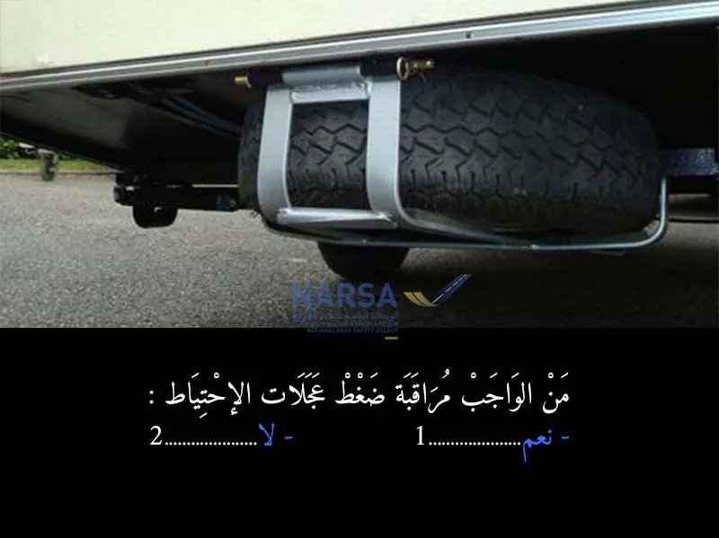
بيّن الجواب
الجواب الصحيح: 1
خاص السائق يراقب من حين لآخر الضغط ديال العجلة الاحتياطية، باش إلا وقع مشكل يلقاها واجدة.
من الناحية القانونية:
مدونة السير كتأكد على صلاحية كل أجزاء المركبة، وهادشي كيضمن حتى العجلة الاحتياطية تكون صالحة، بما فيها الضغط ديالها.السؤال 5
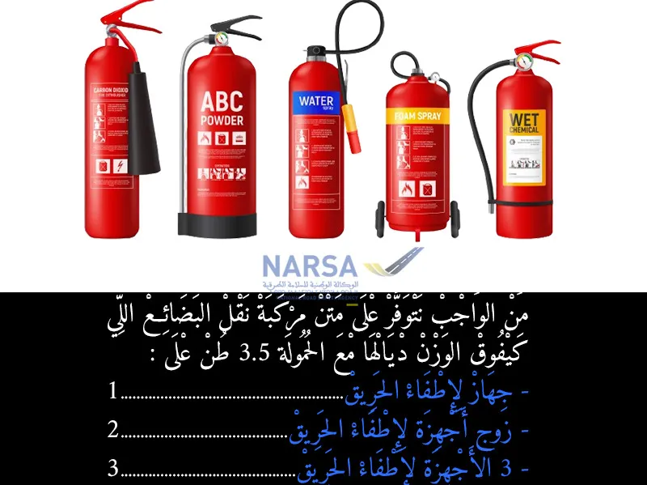
بيّن الجواب
الجواب الصحيح: 2
* الجواب: 2 - جهازين لإطفاء الحريق. ✅
* بالنسبة للشاحنات اللي كيهزوا أكثر من 3.5 طن، ضروري يكون عندهم جهازين لإطفاء الحريق . 🧯🧯السؤال 6
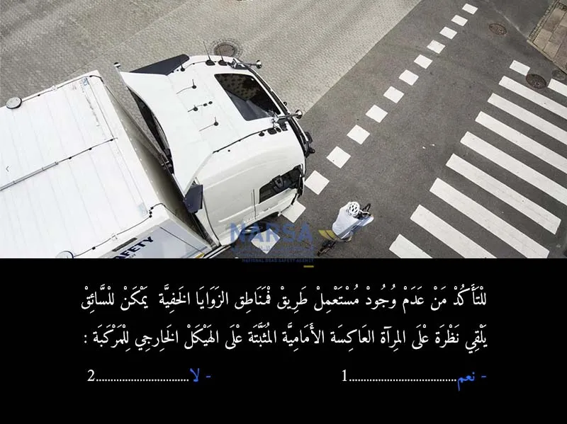
بيّن الجواب
الجواب الصحيح: 1
* الجواب: نعم ✅
* المرايا العاكسة الأمامية (مرايا النقاط العمياء الأمامية) كتساعد السائق باش يشوف المناطق القريبة من الكاميو، بما في ذلك جزء من الزوايا الخلفية أو المناطق اللي كتكون نقطة عمياء خطيرة عند الدورات، باش يتأكد من سلامة مستعملي الطريق الآخرين. 🚛👁️السؤال 7
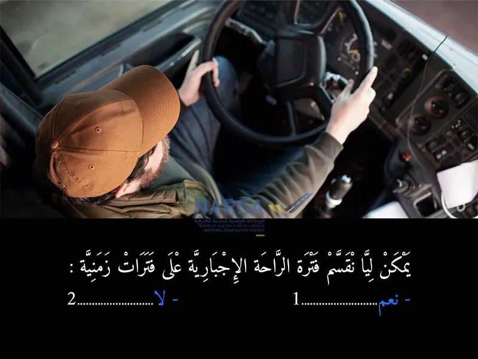
بيّن الجواب
الجواب الصحيح: 1
* الجواب: نعم ✅
⏱️، ممكن تقسم وقت الراحة الإجباري على فترات، ولكن خاصك تحترم الشروط والقواعد اللي كاتحددها مدونة السير بخصوص الحد الأدنى لكل فترة. 😴السؤال 8
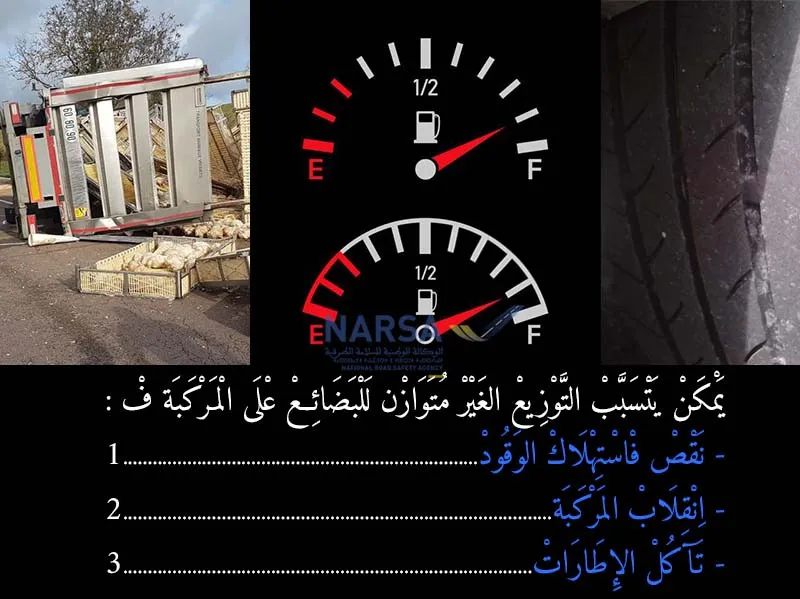
بيّن الجواب
الجواب الصحيح: 2 و 3
* الجواب: 2 - إنقلاب المركبة. ✅
* الجواب: 3 - تآكل الإطارات. ✅
* إذا كانت السلعة ما مقاداش مزيان فالكاميو، كيقدر الكاميو يتقلب 🚛💥، وكايتآكلوا الرويد دغيا. ⚙️السؤال 9
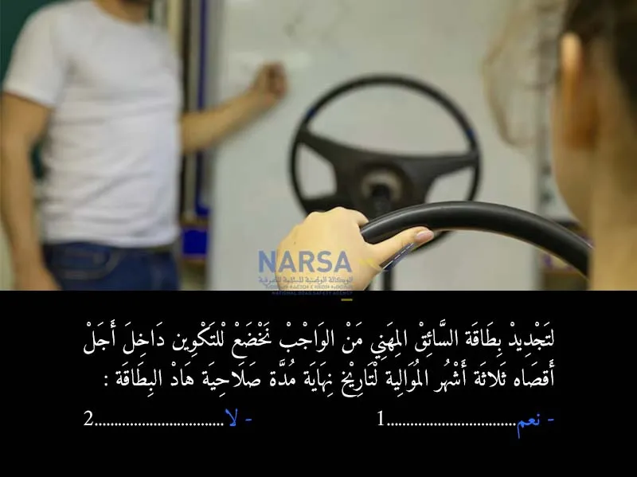
بيّن الجواب
الجواب الصحيح: 1
تجديد بطاقة السائق المهني:
مدة صلاحية بطاقة السائق المهني هي خمس سنوات.
يجب على الراغب في تجديد هذه البطاقة إيداع طلب التكوين لدى المؤسسة المعتمدة داخل أجل أقصاه ثلاثة أشهر، قبل تاريخ انصرام مدة صلاحية بطاقة سائق مهني.
يتم تجديد بطاقة السائق المهني بعد الخضوع لدورة للتكوين المستمر تختلف مدته حسب صنف التكوينالسؤال 10
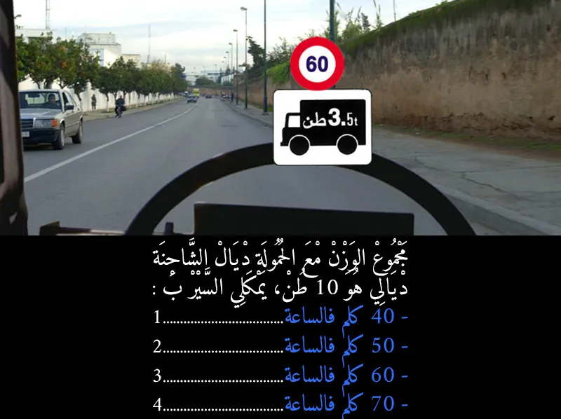
بيّن الجواب
الجواب الصحيح: 1 و 2 و 3
الحد الأقصى للسرعة المشار إليه باللافتة هو 60 كم/ساعة. هذا يعني أن الشاحنة لا يجب أن تتجاوز هذه السرعة.
ولكن، هذا لا يمنعها من السير بسرعات أقل من 60 كم/ساعة.
فإذا كان بإمكان الشاحنة السير بـ 30، 40، أو 50 كم/ساعة، فهذه السرعات كلها مسموح بها لأنها أقل من الحد الأقصى المسموح به وهو 60 كم/ساعة. ✅
اللافتة تحدد "السرعة القصوى" المسموح بها، وليس "السرعة الوحيدة" التي يجب السير بها.السؤال 11
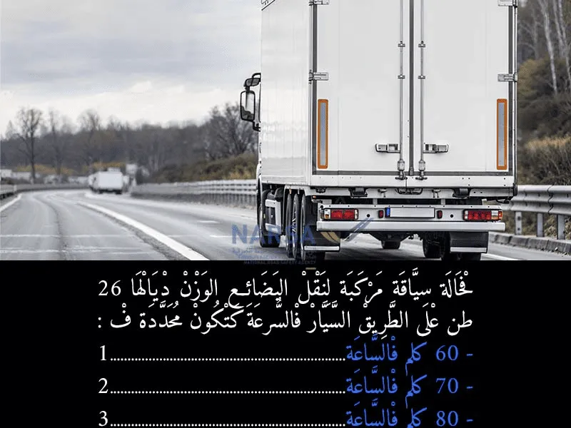
بيّن الجواب
الجواب الصحيح: 3
80 كلم فالساعة. ✅ (هذا هو الحد الأقصى للسرعة المسموح به للمركبات الثقيلة التي يتجاوز وزنها الإجمالي 19 طنًا، أو مجموعات المركبات (شاحنة + مقطورة)، على الطرق السيارة في المغرب.)
السؤال 12
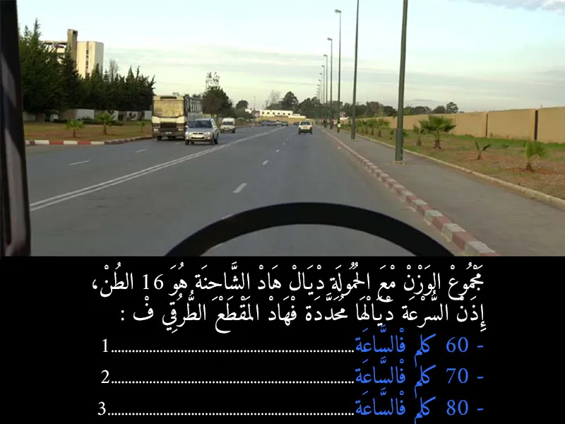
بيّن الجواب
الجواب الصحيح: 1
السرعة القصوى داخل التجمعات السكنية هي:
60 كيلومترًا في الساعة 🚦🚚
الجواب الصحيح هو:
1. 60 كلم في الساعة ✅السؤال 13
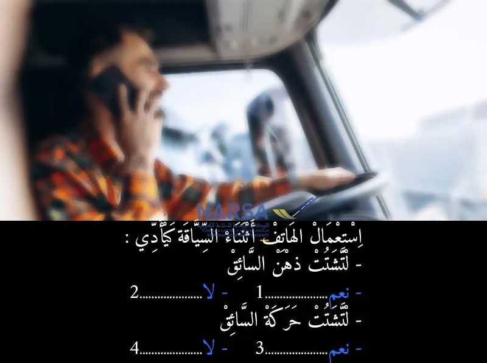
بيّن الجواب
الجواب الصحيح: 1 و 3
وقت اللي كتستعمل الهاتف، عقلك كيبقى مشغول بالكلام أو بالرسائل، وما كتقدرش تركز مزيان فالسياقة ولا فالحوايج اللي كاينين قدامك. يعني راسك ماشي مع الطريق، وهذا كيزيد خطر الحوادث.
ملي كتشد الهاتف بيديك، ما كتقدرش تتحكم مزيان فعجلة القيادة، ولا تدير المنعطفات ولا تحرك السيارة بشكل طبيعي. يعني يديك مشغولين وما كتسوقش بحذر.السؤال 14
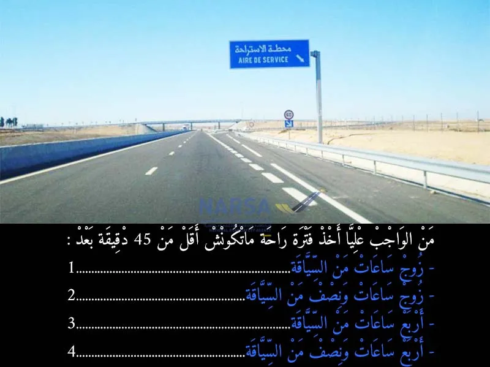
بيّن الجواب
الجواب الصحيح: 4
وفقاً لمدونة السير المغربية وقوانين أوقات القيادة والراحة للسائقين المهنيين (التي تتوافق مع القوانين الدولية في هذا الشأن)، فإن:
بعد 4 ساعات ونصف من القيادة المتواصلة ⏱️، يجب على السائق أخذ فترة راحة لا تقل عن 45 دقيقة.
يمكن تقسيم هذه الراحة إلى فترتين:
الأولى لا تقل عن 15 دقيقة ⏳
والثانية لا تقل عن 30 دقيقة ⏳
يجب أن تُؤخذ هذه الفترات خلال فترة الـ 4 ساعات ونصف أو مباشرة بعدها.
بناءً على ذلك، الجواب الصحيح هو:
4. أربع ساعات ونصف من السياقة. ✅السؤال 15
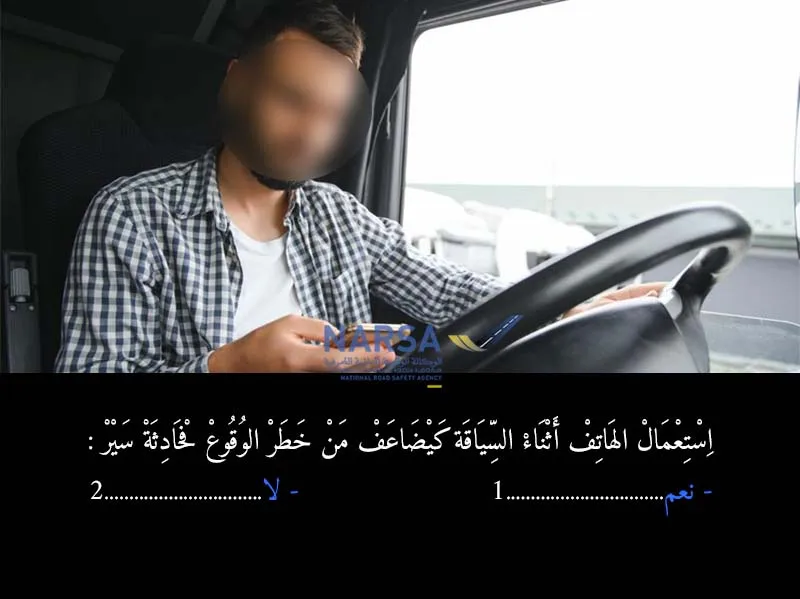
بيّن الجواب
الجواب الصحيح: 1
استعمال الهاتف أثناء السياقة كيشتت الانتباه ديال السائق، حيث الدماغ كيولي مركز مع المكالمة أو الكتابة رسالة نصية، وهو سايق ف الطريق.
وحتى لو السائق باين عليه مركز، التركيز ديالو كينقص بزاف، وكيولي ما كيشوفش الخطر ف الوقت المناسب.السؤال 16
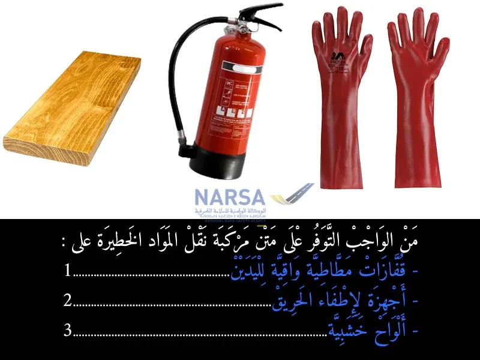
بيّن الجواب
الجواب الصحيح: 1 و 2
من بين هذه المعدات الأساسية:
قفازات مطاطية واقية لليدين: لحماية السائق أو أي شخص يتعامل مع المواد الخطيرة في حال تسربها أو وقوع حادث. 🧤
أجهزة لإطفاء الحريق: تعتبر طفايات الحريق إلزامية وبأحجام وكميات محددة حسب نوع المواد المنقولة وحجم الشاحنة. 🧯السؤال 17
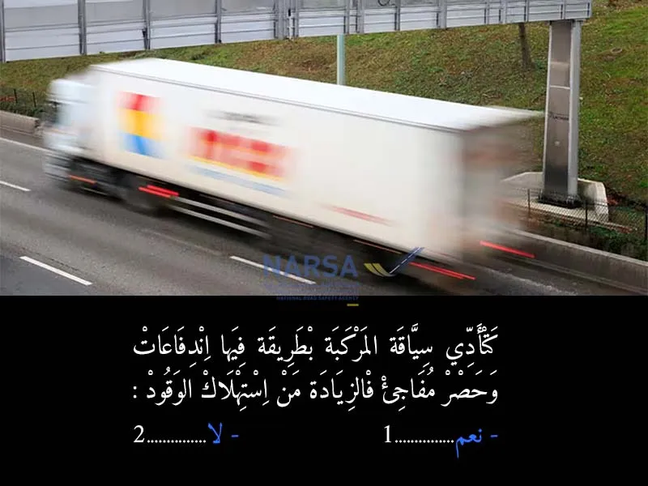
بيّن الجواب
الجواب الصحيح: 1
القيادة المندفعة (القيادة بسرعة، التسارع المفاجئ، الكبح المفاجئ) تؤدي بشكل كبير إلى زيادة استهلاك الوقود. ⛽️
وذلك لعدة أسباب:
التسارع المفاجئ: يتطلب ضخ كمية أكبر من الوقود في المحرك لتحقيق تسارع سريع.
السرعة الزائدة: تزيد من مقاومة الهواء وبالتالي تحتاج السيارة إلى طاقة أكبر للحفاظ على السرعة.
الكبح المفاجئ: يهدر الطاقة الحركية التي تم اكتسابها بالوقود دون أن تستفيد منها السيارة في التقدم.
على النقيض، القيادة الهادئة والسلسة (التسارع التدريجي، الحفاظ على سرعة ثابتة، التباطؤ بالتدريج) تقلل من استهلاك الوقود وتحسن كفاءة السيارة. 🌿السؤال 18
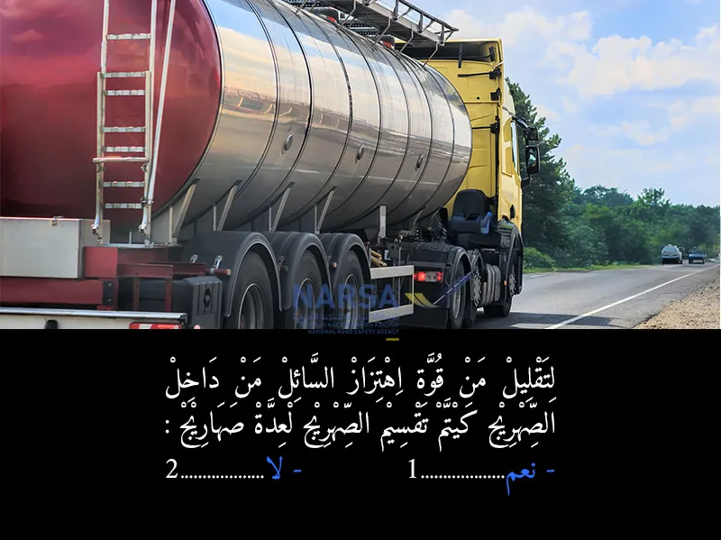
بيّن الجواب
الجواب الصحيح: 1
* الجواب: نعم ✅
* باش مايتحركش السائل بزاف داخل الصهريج ويحافظ الكاميو على التوازن ديالو، كيديرو ليه حواجز أو كيقسموه من الداخل. 🌊🚛السؤال 19
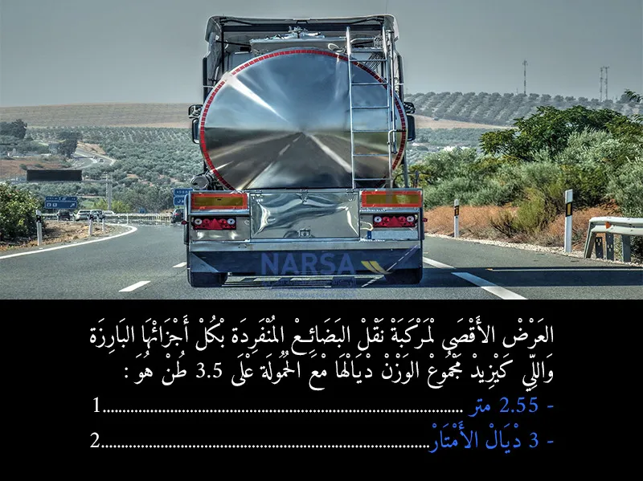
بيّن الجواب
الجواب الصحيح: 1
بما أن السؤال يخص مركبة نقل بضائع "مفردة" ويزيد وزنها عن 3.5 طن (وهي شاحنة ثقيلة)، فإن العرض الأقصى المعتاد والقانوني لها هو 2.55 متر.
إذن، الجواب الصحيح هو:
2.55 متر ✅السؤال 20
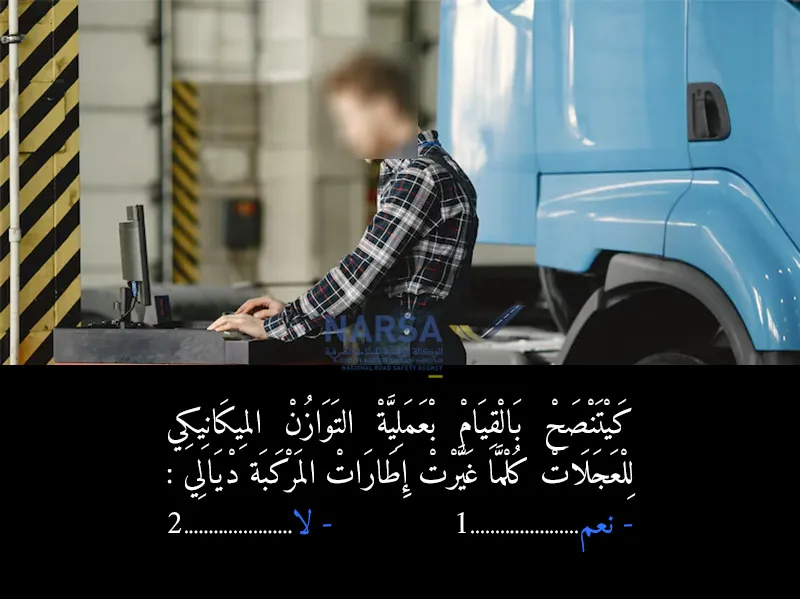
بيّن الجواب
الجواب الصحيح: 1
عند تركيب إطارات جديدة أو إعادة تركيب إطارات موجودة على الجنوط، من الضروري إجراء عملية التوازن الميكانيكي. هذه العملية تضمن توزيع الوزن بالتساوي حول محيط العجلة. إذا كانت العجلة غير متوازنة، فقد يؤدي ذلك إلى:
اهتزازات في المقود أو في جسم المركبة، خاصة عند سرعات معينة.
تآكل غير منتظم وسريع للإطارات.
إجهاد مبكر لنظام التعليق ومكونات التوجيه.
تأثير سلبي على راحة القيادة وسلامتها.
لذلك، لضمان سلامة القيادة، إطالة عمر الإطارات ومكونات المركبة، وتحسين راحة السائق، فإن توازن العجلات ضروري بعد كل تغيير للإطارات.
الجواب الصحيح هو:
نعم ✅